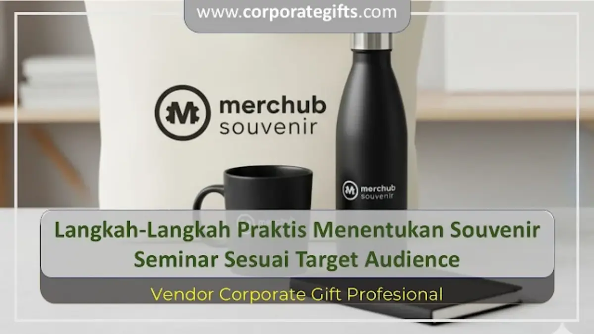

Corporate Gifts ID - Dalam dunia event profesional, pemilihan souvenir seminar tidak bisa dilakukan sembarangan. Souvenir bukan sekadar hadiah pelengkap acara, melainkan bagian integral dari strategi komunikasi dan merchandise branding perusahaan. Dengan memilih souvenir yang sesuai target audience, brand institusi Anda akan terus diingat dan digunakan peserta dalam aktivitas harian mereka.
Melalui katalog produk CorporateGifts.ID, kami menyediakan ragam pilihan paket seminar kit yang dapat disesuaikan secara fleksibel dengan segmentasi peserta, tema kegiatan, dan alokasi anggaran yang tersedia.
Poin Kunci Memilih Souvenir Seminar:
- Segmentasi Audiens: Sesuaikan item dengan demografi penerima (mahasiswa, profesional, staf korporat, atau eksekutif VIP).
- Relevansi Tema: Pilih barang yang merefleksikan topik seminar, seperti tema teknologi digital, kesehatan, atau eco-friendly.
- Nilai Guna Jangka Panjang: Utamakan produk yang sering digunakan sehari-hari agar visibilitas logo perusahaan tetap tinggi.
- Efisiensi Anggaran: Manfaatkan sistem tier pricing atau paket bundling untuk mendapatkan harga satuan terbaik.
- Kustomisasi Logo Rapi: Gunakan teknik sablon presisi, bordir komputer, atau grafir laser tahan lama.
Mengapa Souvenir Seminar Harus Sesuai Target Audience?
Setiap forum seminar memiliki karakteristik peserta yang berbeda-beda, mulai dari rentang usia, profesi, hingga gaya hidup sehari-hari. Souvenir yang relevan dengan kebutuhan audiens akan lebih dihargai, digunakan berulang kali, dan meninggalkan impresi positif terhadap reputasi penyelenggara acara.
Sebaliknya, pengadaan souvenir yang tidak tepat sasaran berisiko hanya berakhir tersimpan di laci tanpa pernah disentuh, atau bahkan dibuang. Oleh sebab itu, mengenali audiens sejak awal merupakan fondasi utama sebelum menyusun daftar belanja cinderamata.
5 Langkah Praktis Menentukan Souvenir Seminar yang Tepat
Berikut lima tahapan terstruktur yang dapat diaplikasikan tim panitia pengadaan maupun event organizer:
1. Identifikasi Profil dan Karakteristik Peserta
Tentukan profil peserta utama acara Anda:
- Mahasiswa & Akademisi: Lebih menyukai barang praktis seperti notebook spiral custom dan pulpen promosi, tote bag spunbond, atau botol minum plastik BPA-free.
- Profesional Muda & Karyawan: Sangat mengapresiasi aksesori kerja fungsional seperti lanyard ID card printing, pouch organizer kabel, flashdisk kartu, dan tumbler stainless.
- Eksekutif & Tamu VIP: Membutuhkan sentuhan prestisius seperti executive corporate gift set, powerbank fast charging grafir laser, agenda kulit deboss, dan pen metal berkotak mewah.
2. Selaraskan dengan Konsep dan Tema Acara
Souvenir yang selaras dengan tema seminar akan memperkuat pesan edukasi yang disampaikan. Pada seminar teknologi, souvenir berbasis gadget digital seperti mouse pad custom atau kabel data multi-port terasa sangat pas.
Sementara untuk simposium kesehatan atau lingkungan hidup, cinderamata eco-friendly seperti tumbler stainless tahan panas SUS 304, cutlery set bambu, atau tote bag kanvas memberikan nilai tambah yang nyata terhadap kampanye keberlanjutan.

Koleksi paket seminar kit lengkap yang diselaraskan dengan kebutuhan audiens korporat dan tema konferensi.
3. Pilih Barang yang Memiliki Nilai Guna Tinggi
Souvenir seminar sebaiknya memiliki masa pakai yang panjang (high utility). Barang yang fungsional untuk rutinitas bekerja, seperti tumbler minum harian, payung lipat otomatis, atau buku catatan kerja, membuat logo institusi Anda terus terlihat oleh rekan kerja di sekitar penerima.
4. Kelola Alokasi Budget Pengadaan Secara Efisien
Budget pengadaan tidak harus mahal, asalkan dialokasikan secara cerdas. Memesan paket seminar kit secara kolektif jauh lebih hemat dibandingkan membeli produk terpisah karena vendor umumnya menawarkan harga grosir bertingkat (tier pricing) untuk kuantitas 100, 300, hingga 1.000 unit ke atas.
5. Terapkan Kustomisasi Logo yang Elegan dan Profesional
Custom logo bukan sekadar hiasan, melainkan identitas visual yang melekat. Desain logo yang proporsional, rapi, dan tidak terlalu mendominasi warna produk akan membuat peserta merasa nyaman mengenakannya di area publik.
Tabel Matriks Rekomendasi Souvenir Seminar per Kategori Peserta
Berikut acuan ringkas rekomendasi paket seminar kit berdasarkan segmentasi target audiens:
| Kategori Audiens | Karakteristik & Kebutuhan | Rekomendasi Item Souvenir | Estimasi Budget per Paket |
|---|---|---|---|
| Mahasiswa / Umum | Aktivitas belajar, mencatat materi, mobilitas tinggi | Tote bag spunbond, blocknote spiral A5, pulpen gel, botol minum plastik BPA-free | Rp20.000 - Rp45.000 |
| Karyawan & Komunitas | Pelatihan internal, workshop keterampilan, networking | Goodie bag kanvas, lanyard + ID card holder, mug sablon, notebook softcover | Rp45.000 - Rp90.000 |
| Profesional & Manajerial | Konferensi bisnis, simposium industri, forum B2B | Tumbler stainless SUS 304, agenda hardcover kulit, flashdisk kartu, pouch serbaguna | Rp90.000 - Rp180.000 |
| Eksekutif / Pembicara VIP | Narasumber kehormatan, direksi, pejabat instansi | Executive gift box, powerbank fast charging, pen metal grafir nama, smart tumbler LED | Rp180.000 - Rp400.000+ |
Kesimpulan: Maksimalkan Efektivitas Branding Acara Anda
Menentukan souvenir seminar sesuai target audience adalah strategi kunci untuk menciptakan pengalaman acara yang memuaskan sekaligus memperkuat citra branding perusahaan. Dengan memahami profil peserta, menyelaraskan dengan tema acara, memilih produk bernilai guna tinggi, mengontrol budget, serta menerapkan kustomisasi logo yang elegan, cinderamata Anda akan menjadi instrumen komunikasi yang berdaya guna tinggi.
Konsultasikan kebutuhan paket seminar kit kustom Anda bersama CorporateGifts.ID. Jelajahi pilihan produk di katalog produk resmi atau ajukan permohonan estimasi biaya melalui formulir permintaan penawaran harga sekarang juga untuk mendapatkan layanan profesional bergaransi tepat waktu.